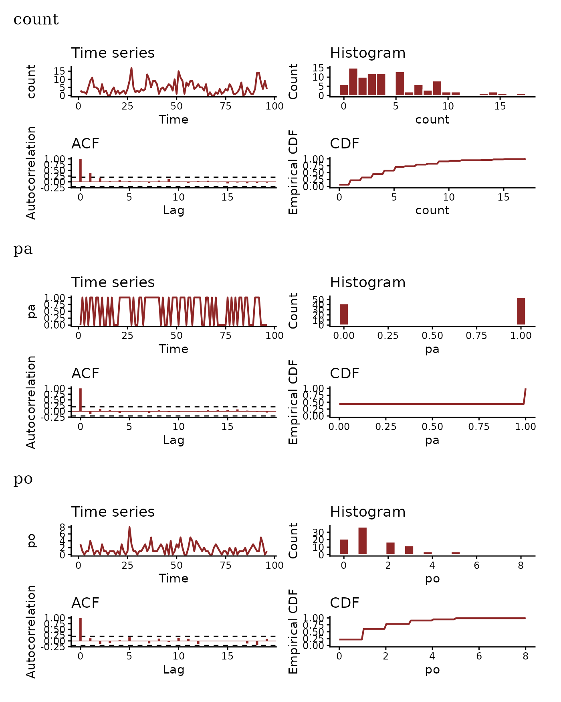
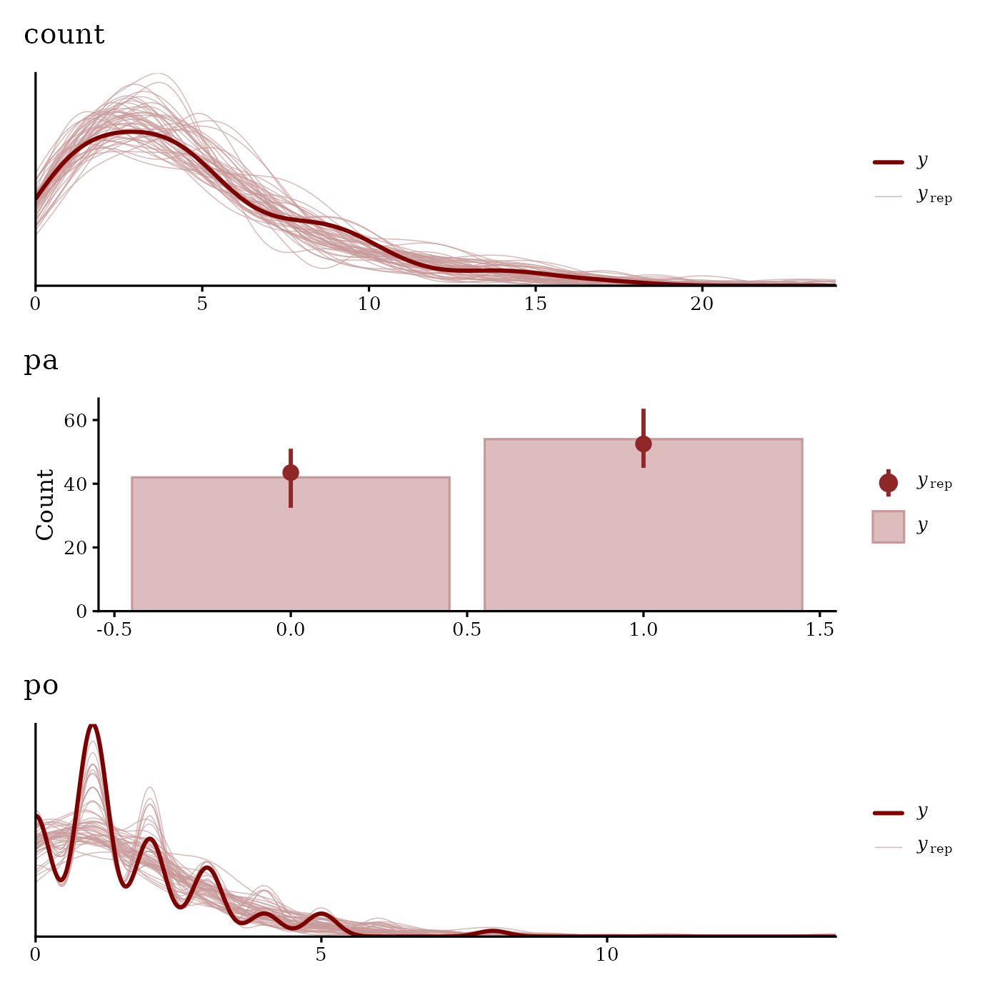
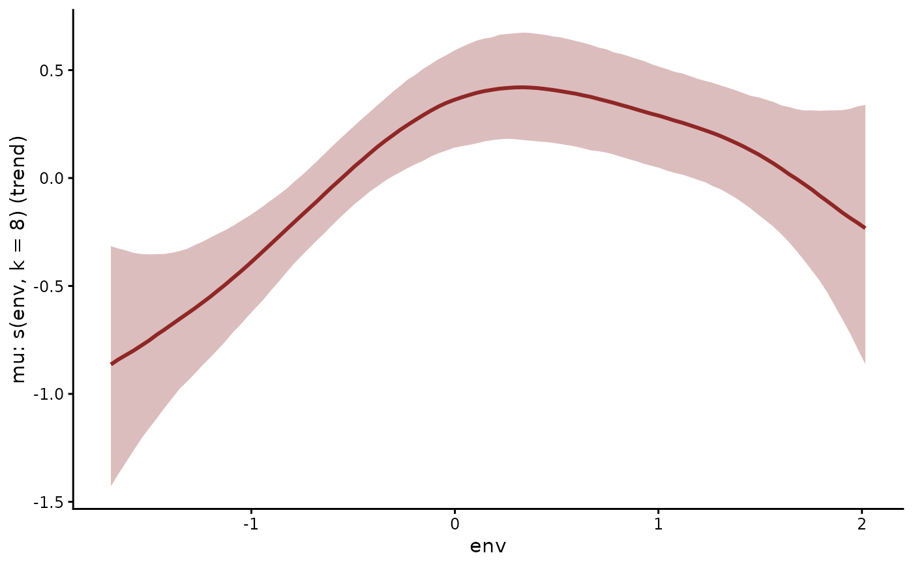
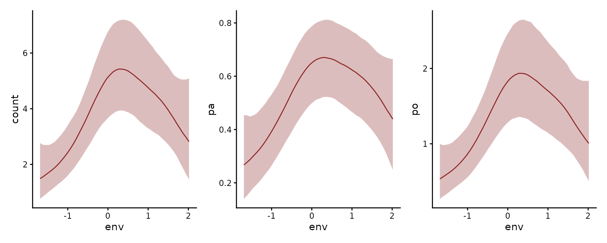
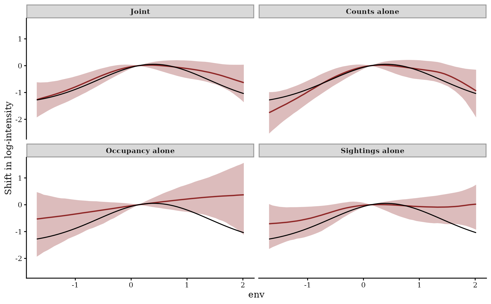
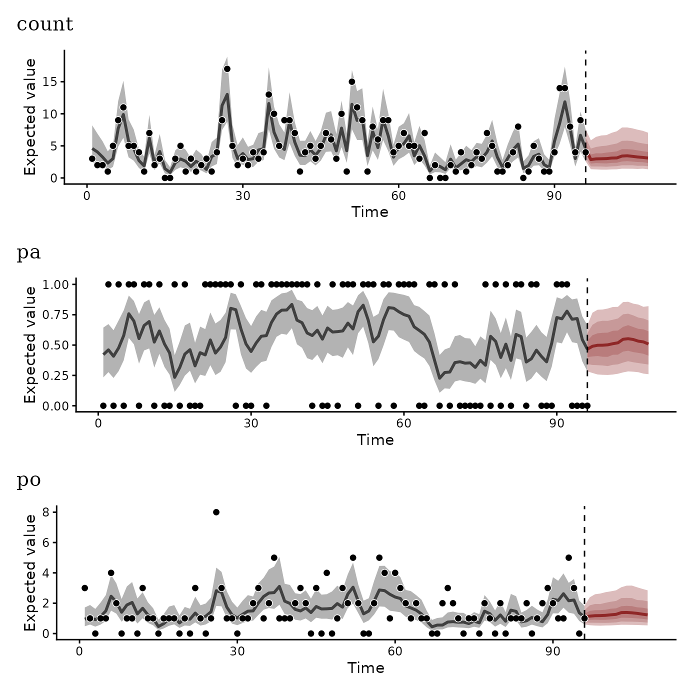

Integrated distribution models with mvgam
Nicholas J Clark
2026-10-28
Source:vignettes/articles/idm.Rmd
idm.RmdSpecies are often monitored by several protocols at once. A structured count route, an occupancy survey and opportunistic sightings each observe the same underlying intensity of individuals, filtered through a different sampling process. Integrated distribution models fit one likelihood per protocol and tie every likelihood to that shared intensity (Fithian et al. 2015; Isaac et al. 2020; Miller et al. 2019). Each protocol then informs the environmental response that drives the intensity.
mvgam fits such a model as a multivariate formula. Each protocol gets
its own bf() with the family and link that describe its
sampling process. One trend_formula describes the
log-intensity they share. This article simulates three protocols
observing one species, then compares how well the joint model and each
protocol alone recover the species’ response to an environmental
gradient. The article on one
latent process with several observation models covers the same
machinery from the angle of the latent state.
The data
We simulate one species observed monthly for eight years. Its log-intensity combines a bell-shaped response \(f\) to an environmental index with an autoregression at lags 1 and 12:
\[ \log \lambda_t = \alpha + f(\text{env}_t) + z_t, \qquad z_t \sim \mathrm{Normal}(\phi_1 z_{t-1} + \phi_{12} z_{t-12},\ \sigma), \]
with \(\phi_1 = 0.55\), \(\phi_{12} = 0.30\) and \(\sigma = 0.35\). The response \(f\) peaks at env \(= 0.4\).
Each protocol links to \(\lambda_t\)
through its own sampling process. Counts along a route surveyed with
effort \(E_t\) are Poisson with mean
\(\lambda_t E_t\). The term
offset(log_effort) carries the effort. An occupancy survey
of a plot of area \(A\) detects the
species when at least one individual is present. With a Poisson number
of individuals in the plot, the detection probability is \(p_t = 1 - \exp(-\lambda_t
A)\). This is the inverse complementary log-log link, under which
\(\text{cloglog}(p_t) = \log \lambda_t + \log
A\) (McCullagh and Nelder 1989). With
bernoulli(link = "cloglog"), the occupancy record shares
the log-intensity of the counts, offset by \(\log A\). Opportunistic sightings arrive at
rate \(\lambda_t\) thinned by an
unknown, constant observer effort. Treated as a thinned Poisson process,
they take a free intercept that absorbs the log thinning and leaves the
shape of \(f\) identified (Fithian et
al. 2015; Renner
et al. 2015).
set.seed(2026)
n_t <- 96
env <- as.numeric(scale(cumsum(rnorm(n_t, 0, 0.3))))
f_env <- function(x) 1.5 * exp(-0.5 * (x - 0.4)^2) - 0.4
z <- numeric(n_t)
for (t in seq_len(n_t)) {
z[t] <- rnorm(1, 0, 0.35) +
(if (t > 1) 0.55 * z[t - 1] else 0) +
(if (t > 12) 0.30 * z[t - 12] else 0)
}
lambda <- exp(0.5 + f_env(env) + z)
effort <- runif(n_t, 0.5, 2)
area <- 0.25
log_thinning <- -0.8
idm_data <- data.frame(
time = seq_len(n_t),
series = factor("species1"),
env = env,
log_effort = log(effort),
count = rpois(n_t, lambda * effort),
pa = rbinom(n_t, 1, 1 - exp(-lambda * area)),
po = rpois(n_t, lambda * exp(log_thinning))
)The joint model
The three bf() calls share the trend formula, which
holds a smooth of env and the autoregression at lags 1 and 12:
joint_formula <-
bf(count ~ 1 + offset(log_effort), family = poisson()) +
bf(pa ~ 1, family = bernoulli(link = "cloglog")) +
bf(po ~ 1, family = poisson())
trend_formula <- ~ s(env, k = 8) + AR(p = c(1, 12))
mod_joint <- mvgam(
joint_formula,
trend_formula = trend_formula,
data = idm_data,
control = list(adapt_delta = 0.95),
chains = 4, seed = 2026, silent = 2
)plot(type = "series") draws each protocol’s record, its
distribution and its autocorrelation:
plot(mod_joint, type = "series")
The three simulated records: counts, occupancy detections and opportunistic sightings.
summary() reports one intercept per protocol and the
trend parameters they share:
summary(mod_joint)
#> Family: count: poisson
#> pa: bernoulli
#> po: poisson
#> Links: count: mu = log
#> pa: mu = cloglog
#> po: mu = log
#> Formula: count ~ 1 + offset(log_effort)
#> pa ~ 1
#> po ~ 1
#> Data: idm_data (Number of observations: 96)
#> Trends: AR({1, 12}); formula: ~s(env, k = 8)
#> Draws: 4 chains, each with iter = 2000; warmup = 1000; thin = 1;
#> total post-warmup draws = 4000
#>
#> == Observation Model ==
#> Regression Coefficients:
#> Estimate Est.Error l-95% CI u-95% CI Rhat Bulk_ESS Tail_ESS
#> count_Intercept 1.14 0.13 0.85 1.34 1.00 1103 1125
#> pa_Intercept -0.32 0.18 -0.70 0.02 1.00 1809 1819
#> po_Intercept 0.23 0.14 -0.09 0.48 1.00 1155 1152
#>
#> == Trend Model ==
#> Smoothing Spline Hyperparameters:
#> Estimate Est.Error l-95% CI u-95% CI Rhat Bulk_ESS Tail_ESS
#> sds(senv_1) 1.92 0.92 0.68 4.18 1.00 1712 2308
#>
#> Regression Coefficients:
#> Estimate Est.Error l-95% CI u-95% CI Rhat Bulk_ESS Tail_ESS
#> senv_1 -0.44 3.18 -7.49 5.13 1.00 1842 1619
#>
#> Trend Specific Parameters:
#> Estimate Est.Error l-95% CI u-95% CI Rhat Bulk_ESS
#> sigma_trend[species1] 0.32 0.06 0.20 0.45 1.00 1505
#> ar1_trend[species1] 0.53 0.15 0.20 0.78 1.00 985
#> ar12_trend[species1] 0.18 0.17 -0.18 0.46 1.00 889
#> Tail_ESS
#> sigma_trend[species1] 2113
#> ar1_trend[species1] 1685
#> ar12_trend[species1] 1227
#>
#> Draws were sampled using sampling(NUTS). For each parameter, Bulk_ESS
#> and Tail_ESS are effective sample size measures, and Rhat is the potential
#> scale reduction factor on split chains (at convergence, Rhat = 1).
#>
#> Next steps:
#> - `pp_check(fit)`: posterior predictive checks
#> - `forecast(fit, newdata = ...)`: out-of-sample forecasts
#> - `lfo_cv(fit)`: leave-future-out model comparison
#> - `conditional_effects(fit)`: covariate effects
#> Use `how_to_cite(fit)` for a methods paragraph and `methods_md(fit)` for its equations.The autoregressive coefficients and the innovation SD each cover the values used to simulate the data. Because only eight annual cycles inform it, the lag-12 coefficient (0.18 [-0.18, 0.46]) is the least certain of these.
The intercepts carry what the shared trend leaves to each protocol. Because the linear predictor of every protocol holds the same \(\log \lambda_t\), the trend cancels from the difference between two intercepts. The difference between the occupancy and count intercepts estimates \(\log A\). The difference between the sightings and count intercepts estimates the log thinning:
b <- as_draws_df(
mod_joint,
variable = c("b_count_Intercept", "b_pa_Intercept", "b_po_Intercept")
)
contrasts <- data.frame(
`log area` = b$b_pa_Intercept - b$b_count_Intercept,
`log thinning` = b$b_po_Intercept - b$b_count_Intercept,
check.names = FALSE
)
round(t(apply(contrasts, 2, quantile, c(0.025, 0.5, 0.975))), 2)
#> 2.5% 50% 97.5%
#> log area -1.75 -1.45 -1.16
#> log thinning -1.09 -0.90 -0.72The simulated constants are \(\log 0.25 = -1.39\) and \(-0.8\). Both intervals cover them. Neither constant was given to the model.
pp_check() draws one panel per protocol, with bars for
the binary occupancy record:
pp_check(mod_joint, ndraws = 50)
Posterior predictive checks for each protocol.
The environmental response
plot(type = "smooths") draws the smooth of env on the
log-intensity scale:
plot(mod_joint, type = "smooths")
The smooth of env from the joint model, with its 95% credible interval.
conditional_effects() carries that smooth through each
protocol’s observation model, with the trend state held out and effort
set to one:
ce <- conditional_effects(mod_joint)
patchwork::wrap_plots(plot(ce, plot = FALSE), nrow = 1)
Expected count, detection probability and sighting rate along env from the joint model, with 95% credible intervals.
To ask what the integration gains, we fit each protocol alone with the same trend formula:
fit_one <- function(formula) {
mvgam(formula, trend_formula = trend_formula, data = idm_data,
control = list(adapt_delta = 0.95),
chains = 4, seed = 2026, silent = 2)
}
mod_count <- fit_one(
bf(count ~ 1 + offset(log_effort), family = poisson())
)
mod_pa <- fit_one(bf(pa ~ 1, family = bernoulli(link = "cloglog")))
mod_po <- fit_one(bf(po ~ 1, family = poisson()))Each model’s linear predictor over a grid of env values shares the shape of \(f\). Subtracting its value at the median of the grid removes the protocol’s intercept and the trend state. The joint model’s predictor is taken from the count response:
grid <- seq(min(env), max(env), length.out = 60)
ref <- which.min(abs(grid - median(grid)))
newdata <- idm_data[rep(1, length(grid)), ]
newdata$env <- grid
newdata$log_effort <- 0
response_draws <- function(fit, resp = NULL) {
lp <- posterior_linpred(fit, newdata = newdata, resp = resp)
lp - lp[, ref]
}
fits <- list(
"Joint" = response_draws(mod_joint, resp = "count"),
"Counts alone" = response_draws(mod_count),
"Occupancy alone" = response_draws(mod_pa),
"Sightings alone" = response_draws(mod_po)
)
truth <- data.frame(env = grid, f = f_env(grid) - f_env(grid[ref]))
curves <- do.call(rbind, lapply(names(fits), function(nm) {
q <- apply(fits[[nm]], 2, quantile, c(0.025, 0.5, 0.975))
data.frame(model = nm, env = grid, lo = q[1, ], med = q[2, ],
hi = q[3, ])
}))
curves$model <- factor(curves$model, levels = names(fits))
ggplot(curves, aes(env)) +
geom_ribbon(aes(ymin = lo, ymax = hi), fill = "#DCBCBC") +
geom_line(aes(y = med), colour = "#8F2727", linewidth = 0.8) +
geom_line(aes(y = f), data = truth, linewidth = 0.6) +
facet_wrap(~ model) +
labs(x = "env", y = "Shift in log-intensity")
Posterior medians and 95% credible intervals of the response to env from the joint model and from each protocol alone. The black line is the simulated response.
Three summaries compare the four curves: the root mean squared error of the posterior median against the simulated response, the mean width of the 95% credible interval and the posterior median of the env value at which each curve peaks.
recovery <- t(vapply(fits, function(draws) {
q <- apply(draws, 2, quantile, c(0.025, 0.5, 0.975))
peak <- grid[apply(draws, 1, which.max)]
c(RMSE = sqrt(mean((q[2, ] - truth$f)^2)),
`Interval width` = mean(q[3, ] - q[1, ]),
`Peak env` = median(peak))
}, numeric(3)))
round(recovery, 2)
#> RMSE Interval width Peak env
#> Joint 0.18 0.67 0.38
#> Counts alone 0.18 0.74 0.32
#> Occupancy alone 0.63 1.17 2.02
#> Sightings alone 0.42 0.88 1.14The joint model and the counts alone track the response with root mean squared errors of 0.18 and 0.18. Intervals are narrowest in the joint fit. Against the simulated optimum of 0.4, the sightings alone put the peak at env 1.14 and the occupancy record alone at env 2.02. One binary outcome per month constrains the intensity weakly.
Forecasts
forecast() extends the shared state past the last month
and passes it through each protocol’s observation model. The new data
hold unit effort and env at its final observed value.
type = "expected" returns the expected count, the detection
probability and the expected sightings:
future <- data.frame(
time = n_t + 1:12,
series = factor("species1"),
env = env[n_t],
log_effort = 0,
count = NA, pa = NA, po = NA
)
fc <- forecast(mod_joint, newdata = future, type = "expected")
plot(fc)
Expected values for each protocol over the training months and a 12-month forecast. Points are the observations.
The three forecasts share one future for the state. Once the held-out
records arrive, score() evaluates them protocol by
protocol.
When protocols disagree
We fit the joint model on the premise that every protocol observes one intensity through one response to env. Two violations are common. The first is a mismatch of species. An opportunistic record that mixes the target with an easily confused congener observes a different intensity (Fithian et al. 2015 analyse this case). The second is a mismatch of habitat. If the occupancy plots sample habitat the count route never visits, the two protocols see different responses to env. A joint smooth then averages them.
The single-protocol fits diagnose both mismatches. A protocol whose
response disagrees with the others, beyond what its interval allows, is
a candidate for a response of its own. That response moves to the
protocol’s observation formula, for example
bf(pa ~ 1 + s(env, k = 5), family = bernoulli(link = "cloglog")),
while the shared response stays in the trend formula. Koshkina et al.
(2017) develop
this combination of presence-background and occupancy data with
imperfect detection.
Summary
An integrated distribution model in mvgam is one call. Each protocol’s family and link express its sampling process. The shared trend pools what every protocol says about the intensity. In this simulation, intervals on the environmental response were narrowest in the joint fit. Fitted alone, the occupancy record put the optimum at env 2.02, against the simulated 0.4.
Where to next
Each function used here has a help page, such as
?pp_check or ?AR, with its arguments and
output. how_to_cite() writes a methods paragraph for a
fitted model. methods_md() writes out its equations.
Related articles:
- One latent process, several observation models compares the latent state recovered by joint and separate fits.
- N-mixture models estimate detection from repeated visits within one protocol.
- Joint species distribution models share latent factors among many species.
- Forecast evaluation covers scoring rules and leave-future-out cross-validation.
References
Fithian W, Elith J, Hastie T and Keith DA (2015). Bias correction in species distribution models: pooling survey and collection data for multiple species. Methods in Ecology and Evolution 6(4), 424-438. doi:10.1111/2041-210X.12242
Isaac NJB, Jarzyna MA, Keil P, Dambly LI, Boersch-Supan PH, Browning E, Freeman SN, Golding N, Guillera-Arroita G, Henrys PA, Jarvis S, Lahoz-Monfort J, Pagel J, Pescott OL, Schmucki R, Simmonds EG and O’Hara RB (2020). Data integration for large-scale models of species distributions. Trends in Ecology & Evolution 35(1), 56-67. doi:10.1016/j.tree.2019.08.006
Koshkina V, Wang Y, Gordon A, Dorazio RM, White M and Stone L (2017). Integrated species distribution models: combining presence-background data and site-occupancy data with imperfect detection. Methods in Ecology and Evolution 8(4), 420-430. doi:10.1111/2041-210X.12738
McCullagh P and Nelder JA (1989). Generalized Linear Models (2nd edition). Chapman and Hall/CRC. doi:10.1201/9780203753736
Miller DAW, Pacifici K, Sanderlin JS and Reich BJ (2019). The recent past and promising future for data integration methods to estimate species’ distributions. Methods in Ecology and Evolution 10(1), 22-37. doi:10.1111/2041-210X.13110
Renner IW, Elith J, Baddeley A, Fithian W, Hastie T, Phillips SJ, Popovic G and Warton DI (2015). Point process models for presence-only analysis. Methods in Ecology and Evolution 6(4), 366-379. doi:10.1111/2041-210X.12352